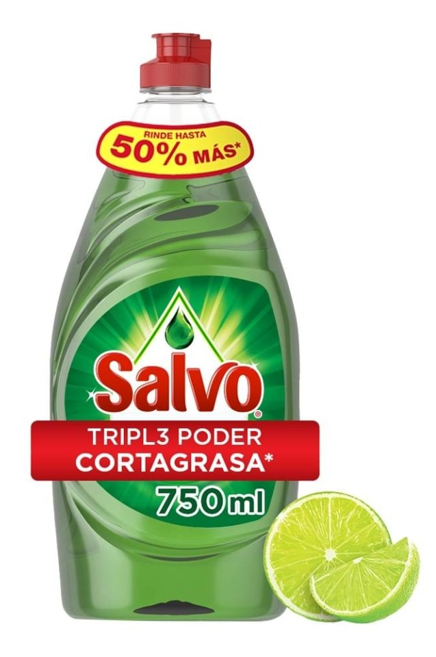

Lavatrastes Líquido | Salvo Limón 750 ml
PRECIO: $30.00
CODIGO DEL PRODUCTO: 00750633930482
DESCRIPCIÓN: Jabón líquido para trastes Salvo aroma limón. ¡Gracias a su poderosa fórmula podrás arrancar la grasa en una sola lavada! Con este jabón podrás dejar tus platos súper limpios, además realizarás una limpieza profunda, así evitarás que se queden restos de comida en ollas y sartenes.